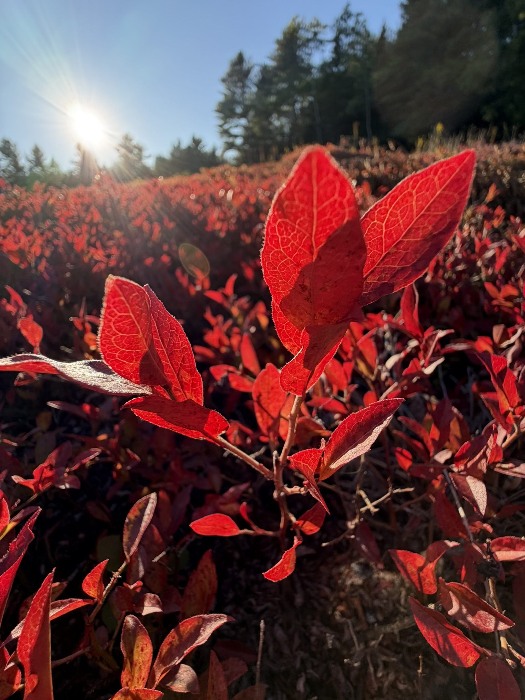

Recently I shared a post on Instagram about the leaves of Maine's native wild blueberry and the remarkable plant chemistry behind their autumn color. The reason for taking a closer look is written across the barrens every year in rich, unmistakable red.
Beyond the berry
We know the berry. It is harvested, frozen, baked, studied, and celebrated. The leaf is usually left behind, even though it has spent the whole season doing the work of keeping the plant alive.
Research gives us good reason to look again. Wild blueberry leaves are filled with antioxidant compounds, and research across wild blueberries has found higher concentrations of these protective compounds in the leaves than in the fruit. The leaf is not a lesser byproduct of the berry. It is one of the most chemically active parts of the plant.
When the barrens turn red
When the coastal summer air quietly shifts to crisp autumn mornings, the barrens change almost overnight. Summer green gives way to crimson, scarlet, and deep wine.
That rich color is fueled by anthocyanins. These are the same natural pigments that give blueberries their blue-purple skin. In a leaf, they also help the plant handle bright light, cold, and other stress. The field is not simply fading. It is showing us some of the chemistry it used to protect itself.

Built for hard seasons
The berry uses its color to protect the fruit. The leaf uses its own chemistry to manage an entire growing season of sun, wind, cold, and dry spells. By autumn, that work becomes visible in red.
This is the science behind those photographs: antioxidant compounds are part of the plant's protective system, and the hard-working leaf carries them in abundance. The berry is prized for its antioxidants, but the leaves contain an even broader and, in wild blueberry research, more concentrated store of protective plant chemistry.

What the leaves hold
The berry is not the end of the story. The red leaf is an antioxidant-rich, underused part of this native plant, and its deep color is a visible expression of the compounds held within it.
The research already establishes the richness of lowbush blueberry leaf chemistry and records higher leaf-than-fruit phenolic concentrations across related wild blueberries. What remains unstudied is the exact comparison between red autumn Maine lowbush leaves and their berries, along with how safely and effectively people can use those leaves. That unanswered work defines the next question; it does not erase the antioxidant abundance researchers have already measured. I would love to collaborate with the University of Maine on this research. If such a study already exists, I would be grateful to read it and update this post.
Could the red leaves become tea?
There is real research behind blueberry leaf tea, but not yet the exact study I am looking for. A 2009 study prepared hot-water infusions from highbush blueberry leaves and measured substantial polyphenol content and antioxidant activity. More recently, a randomized controlled trial studied fermented blueberry leaf tea in adults with sleep concerns. Those papers show that blueberry leaves can be prepared and studied as tea, but they do not establish the safety, ideal harvest time, preparation, or health effects of tea made from red autumn Vaccinium angustifolium leaves here in Maine.
Research specific to lowbush blueberry leaves has identified abundant chlorogenic acid and quercetin compounds in laboratory extracts, and another study documented seasonal changes in the plant's chemistry. That makes red leaf tea an interesting direction for careful food-science and safety research, not a home-use recommendation. Before serving or selling it, I would want the species, harvest stage, processing method, dosage, contaminants, and possible medication interactions evaluated by qualified researchers.

After the rakes are gone
Long after the rakes and berry boxes are put away, there is still plenty happening in the field. The leaves turn red, the stems harden, and the plants settle in for winter.
I used to see that red as a beautiful end to the season. Now I see a question in it. The berries may be what bring us into the field, but the leaves have given me another reason to keep looking.